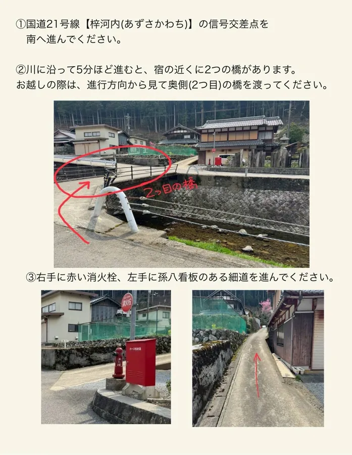
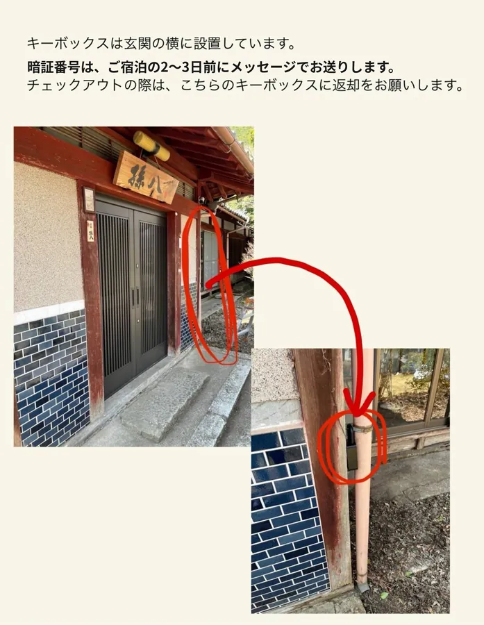
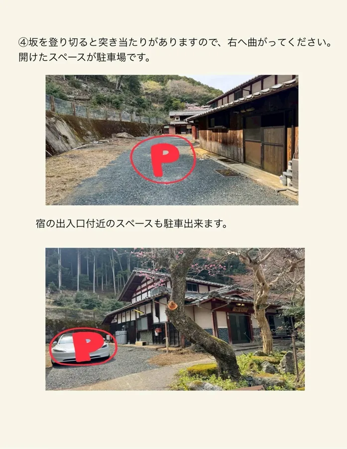
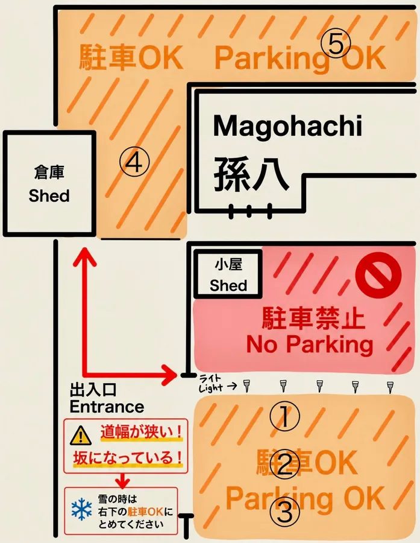
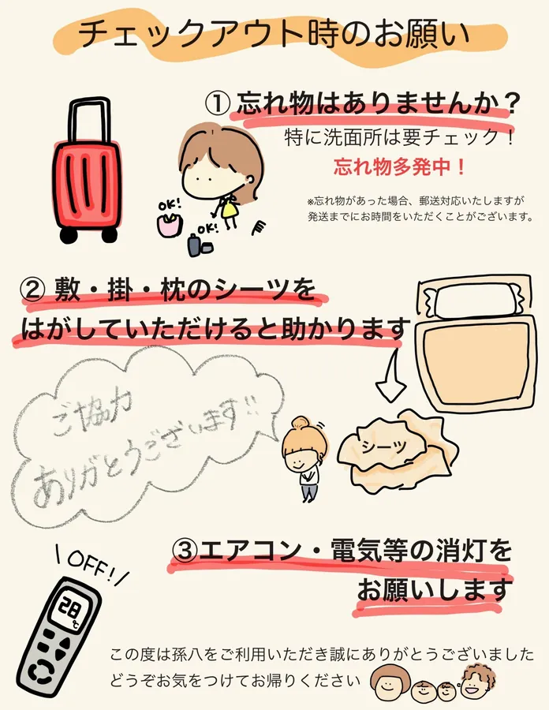
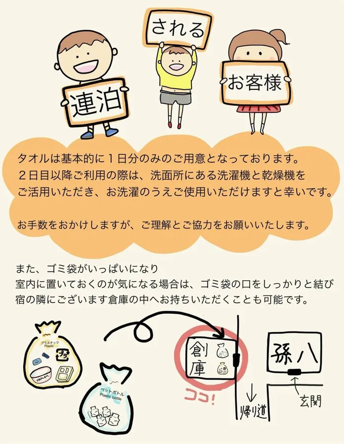
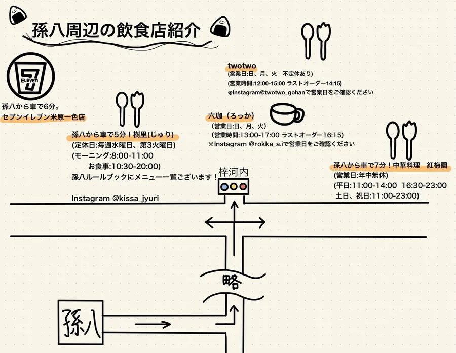
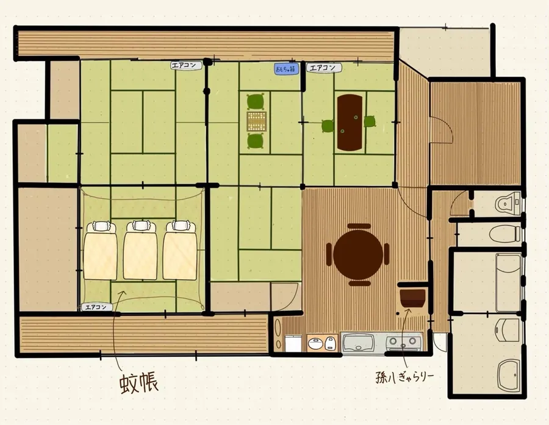

1チェックインの流れHow to Check In
孫八はセルフチェックインです。スタッフは常駐していませんので、以下の手順でお入りください。
Mago8 is self check-in. No staff is on site, so please follow the steps below.
キーボックスの暗証番号とWi-Fiのパスワードは、このページには載せていません。ご宿泊の2〜3日前に、メール、またはご予約サイト（Airbnb・Booking.com）のメッセージでお送りします。
The key box code and Wi-Fi password are not shown on this page. We will send them 2–3 days before your stay, by email or by message on your booking site (Airbnb / Booking.com).

-
坂の入口
The entrance of the slope
集落の道から、孫八へ続く坂の入口に入ります。道幅が狭いので、ゆっくりお進みください。
Turn into the slope that leads up to Mago8. The road is narrow, so please drive slowly.
-
駐車
Parking
坂を登り切った先、または宿の出入口付近に駐車してください（詳しくは「2. 駐車場」）。
Park at the top of the slope or near the entrance of the house (see "2. Parking").
-
玄関まで
Walk to the front door
駐車スペースから玄関まで歩いて向かいます。
Walk from the parking space to the front door.
-
キーボックスの場所
Where the key box is
キーボックスは玄関の横に設置しています。
The key box is next to the front door.

玄関とキーボックスの場所（タップで拡大） Front door and key box location (tap to enlarge) -
キーボックスの開け方
How to open the key box
事前にお送りした暗証番号を合わせて開け、中の鍵で玄関を開けてください。
Set the code we sent you, open the box, and use the key inside to unlock the front door.

2駐車場Parking
- 駐車場は 無料 です。
- Parking is free.
- 通常は 5台 まで停められます（下の宿の出入口付近に 3台、坂を登り切った先に 2台）。
- Up to 5 cars can be parked: 3 in the lower area near the entrance of the house, and 2 at the top of the slope.
- 道幅が狭く、坂道です。すれ違いや切り返しにご注意ください。
- The road is narrow and sloped. Please take care when passing or turning.
雪の日（雪が降っている日・積もっている日）：スタッドレスタイヤが必須です。停められるのは3台までです。坂を登るのは危険なため、下の3台分（出入口付近）のみご利用ください。
On snowy days (when it is snowing or snow has accumulated): winter tires (snow tires) are required. Only 3 cars can be parked. Driving up the slope is dangerous, so please use only the 3 lower spaces near the entrance.




3チェックイン・チェックアウトの時間Check-in / Check-out Hours
- チェックイン
- Check-in
- 15:00 以降
- From 15:00
- チェックアウト
- Check-out
- 11:00 まで
- By 11:00
早めの到着・延長をご希望の場合は、前後のご予約状況によりご相談に応じます。事前にLINEでお問い合わせください。
Early check-in or late check-out may be possible depending on the bookings before and after yours. Please ask us on LINE in advance.
4チェックアウトの流れHow to Check Out
チェックアウトは 11:00まで です。ご退室の際に、以下のご確認をお願いいたします。
Check-out is by 11:00. Before you leave, please check the following.
-
食器類を元の場所へ
Put the dishes back
使用した食器類は、元の場所へお戻しください。
Please return any dishes and utensils you used to where they were.
-
ゴミ
Trash
ゴミは分別して、室内に置いていただいて構いません。ゴミが多い場合は、外の倉庫（古家）の中に置いていただけますと助かります。
Please separate your trash. You may leave it inside the house. If there is a lot, we would appreciate it if you put it in the outdoor storage shed (the old house).
-
シーツ（お手数でなければ）
Bed sheets (if you don't mind)
使用した敷き・掛けシーツを剥がしておいていただけますと、清掃の際に大変助かります。
If you could strip the fitted and top sheets you used, it would be a great help for cleaning.
-
電源を切る
Turn everything off
エアコン、照明などの電源をお切りください。
Please turn off the air conditioner, lights and other appliances.
-
施錠して鍵をキーボックスへ
Lock up and return the key
玄関を施錠し、鍵をキーボックスへお戻しください。
Lock the front door and return the key to the key box.

忘れ物にご注意ください。特に、充電器・衣類・冷蔵庫の中・洗面所・お風呂場を、今一度ご確認ください。
Please check for forgotten items. In particular: chargers, clothes, the inside of the fridge, the washroom and the bathroom.
5ゴミ・お買い物Trash & Shopping
- ゴミ：分別して、室内に置いていただいて構いません。ゴミが多い場合は、外の倉庫（古家）の中へお願いします。
- Trash: Please separate it. You may leave it inside the house. If there is a lot, please put it in the outdoor storage shed (the old house).
- お買い物：徒歩圏内にお店はありません。食材・飲み物はお越しになる前にご準備ください。
- Shopping: There are no shops within walking distance. Please buy food and drinks before you arrive.

6周辺情報・お部屋の間取りNearby Places & Floor Plan
周辺の飲食店・コンビニの地図と、お部屋の間取りです。画像をタップすると拡大できます。
A map of nearby restaurants and the convenience store, and the floor plan of the house. Tap an image to enlarge it.




7住所・地図Address & Map
〒521-0211 滋賀県米原市梓河内344
344 Azusakawachi, Maibara, Shiga 521-0211, Japan
Googleマップで開くOpen in Google Maps8お問い合わせContact
ご不明な点は、公式LINEからお気軽にどうぞ。
If you have any questions, feel free to message us on LINE.
LINEで問い合わせるMessage us on LINE